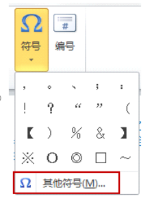
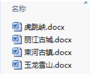
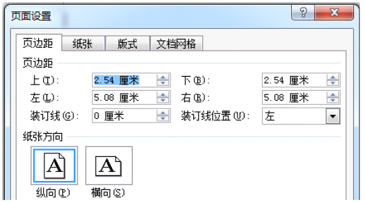
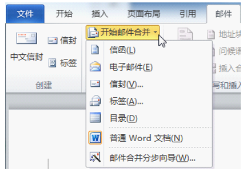

1.在Word2010中，给段落添加项目符号，可以通过“插入”选项卡→“符号”→“其他符号”来实现。( )

解析：Word 2010、2013、2016等版本的默认保存格式为.docx，而Word 2003及以下版本的默认保存格式为.doc。
2.在Word2010中，要完成内容的剪切、复制、粘贴等操作，除了可以使用快捷键外，还可以使用“开始”选项卡中对应的命令。
在Word2010软件操作中，“开始”选项卡集成了常用的文本编辑命令，其中就包含剪切、复制、粘贴功能，同时用户也可使用如Ctrl+X（剪切）、Ctrl+C（复制）、Ctrl+V（粘贴）等快捷键完成相同操作，所以该说法正确。
3.在Word2010中编辑文档时，要找回误删的文字或图片，可以打开回收站，选定要恢复的内容，执行“还原选定的项目”来恢复文字或图片。
在Word2010编辑文档时，误删的文字或图片并不会进入计算机的回收站。通常可使用Word自身的撤销功能（快捷键Ctrl + Z）来找回误删内容 ，所以该说法错误。
4.陈老师想将几位同学编写的介绍丽江景点的文档汇总成一个文档，最便捷的方法是使用word的文件合并功能。

在Word中，文件合并功能能够将多个文档内容整合到一个文档中，相比手动复制粘贴等方式，极大提高了汇总效率，是将多个文档汇总的便捷方法。
5.在Word2010中，编辑文档时可以使用书签链接来打开引用的外部链接文件。
在Word2010中，书签主要用于在文档内部创建定位标记，方便在文档内快速跳转，不能直接用于打开引用的外部链接文件。若要打开外部链接文件，通常使用超链接功能。所以该说法错误。
6.如图所示，在“页面设置”对话框中，若将纸张方向设置为“横向”，此时文档的上下页边距是5.08厘米，左右页边距是2.54厘米。( )

已知原来上下页边距是2.54厘米，左右页边距是5.08厘米 ，当纸张方向设置为“横向”后，上下和左右页边距概念互换，但数值并不会自动改变，所以此时文档的上下页边距应是2.54厘米，左右页边距应是5.08厘米，而题目表述与之不符，故该说法错误。
7.在word中，要将多个文档合并为一个文档，可以通过“邮件”选项卡→“开始邮件合并”组→“开始邮件合并”下的“普通word文档”命令来实现。( )

在Word中，“邮件”选项卡下的“开始邮件合并”相关功能主要用于批量生成文档，如批量生成邀请函、信封等，并非用于将多个文档合并为一个文档。通常合并多个Word文档，可以使用“插入”选项卡中的“对象”功能，选择“文件中的文字”来实现。所以题目中的说法是错误的。
8.书籍一般由图片、文字、日期、价格等构成。( )
书籍一般主要由文字和图片构成，日期和价格并非构成书籍的必要元素。日期通常用于记录书籍出版时间等信息，价格是书籍在市场流通中的定价，它们不属于书籍本身构成的范畴。所以该说法错误。
9.在Word2010中，要将(1011)2设置成(1011)₂，可以使用“开始”选项卡“字体”组中的“x₂”按钮来实现。( )
在Word2010里，“开始”选项卡“字体”组中的“x₂”按钮为下标按钮。通过选中数字2，再点击该“x₂”按钮，能够将(1011)2设置为(1011)₂ ，所以此说法正确。
10.文字处理的应用价值在于突出个性，增加视觉冲击力，让文档具有艺术性视觉效果。( )
文字处理的应用价值是多方面的，虽然突出个性、增加视觉冲击力以及赋予文档艺术性视觉效果是其中一部分，但文字处理更重要的价值在于准确清晰地传达信息、提高文档编辑和排版效率、满足不同场景（如商务办公、学术写作等）的文档需求等。所以该说法过于片面，是错误的。
11.在Word2010中，通过插入页码可以实现在文档每页的底部显示日期或者作者等信息。( )
在Word2010中，插入页码的主要功能是在文档页面上添加页号。若要在文档每页底部显示日期或作者等信息，通常需要通过插入页眉页脚功能，并在页脚区域手动插入日期域、作者信息等，而不是通过插入页码来实现。所以该说法错误。
12.在Word2010中，版面编排需要突出主题，版面中各个元素需要合理搭配。( )
在Word2010进行版面编排时，突出主题能让文档核心内容更清晰传达，而合理搭配各个元素，如文字、图片、图表等，可提升文档整体的美观度与可读性，所以该说法正确。
13.在Word中，可以使用Shift键将当前的“改写”状态转换成“插入”状态。( )
在Word中，通常是通过双击状态栏中的“改写”按钮，或者按键盘上的Insert键来实现“改写”状态与“插入”状态的转换，并非使用Shift键。所以该说法错误。
14.在Word中，页眉和页脚内容不能修改。( )
在Word中，用户只需双击页眉或页脚区域，即可进入编辑状态对页眉和页脚内容进行修改，包括文字、格式、页码等各种元素。所以“页眉和页脚内容不能修改”这一说法错误。
15.在Word2010中，要粘贴已经复制好的内容，可以使用“”命令。( )
在Word2010中，当内容复制好后，确实可以通过“粘贴”命令来实现粘贴操作。常见的方式有在“开始”选项卡中找到“粘贴”按钮点击，或者右键菜单中选择“粘贴”，所以该说法正确。
16.在Word中，插入的页码格式可以是“甲、乙、丙…”。( )
在Word中，通过“插入”选项卡找到“页码”功能，在设置页码格式时，“编号格式”里提供了多种选择，其中就包括“甲，乙，丙，…”这种格式。所以在Word中插入的页码格式可以是“甲、乙、丙…”，该说法正确。
17.在Word的“页面布局”选项卡→“页面设置”组中可以设置页面颜色。( )
在Word中，设置页面颜色通常是在“页面布局”选项卡中的“页面背景”组里，通过点击“页面颜色”按钮来进行操作，并非在“页面设置”组中。所以该说法错误。
18.在Word中，输入法的当前状态如图所示，此时输入句号，显示的是“.”。( )
在Word2010中，若输入法处于中文标点状态，输入句号显示的是“。”；若处于英文标点状态，输入句号显示的才是“.” 。所以根据图片可判断输入显示应该是“。”，该说法错误。
19.在Word2010中，插入的超链接可以链接到网页地址，不能链接外部文件。( )
在Word2010中，插入超链接时，不仅可以链接到网页地址（URL），还能链接到外部文件，如其他Word文档、Excel表格、PDF文件等。操作时，在“插入超链接”对话框中，通过选择“现有文件或网页”，即可定位并选择本地的外部文件进行链接。所以该说法错误。